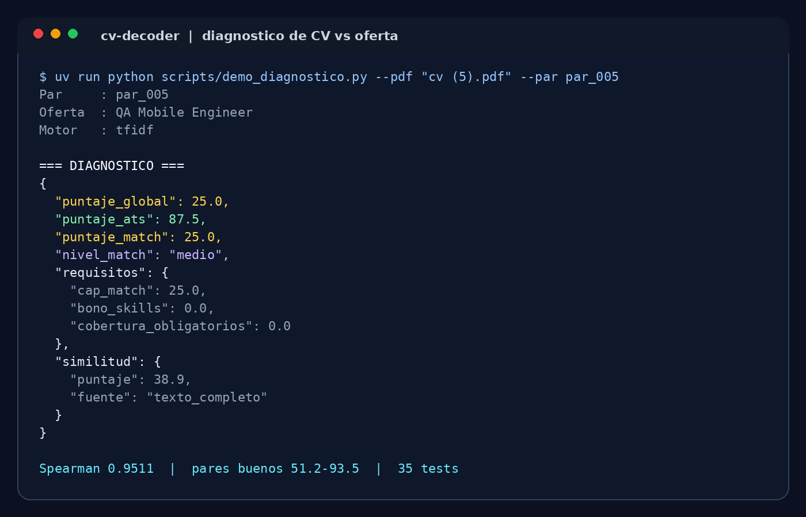
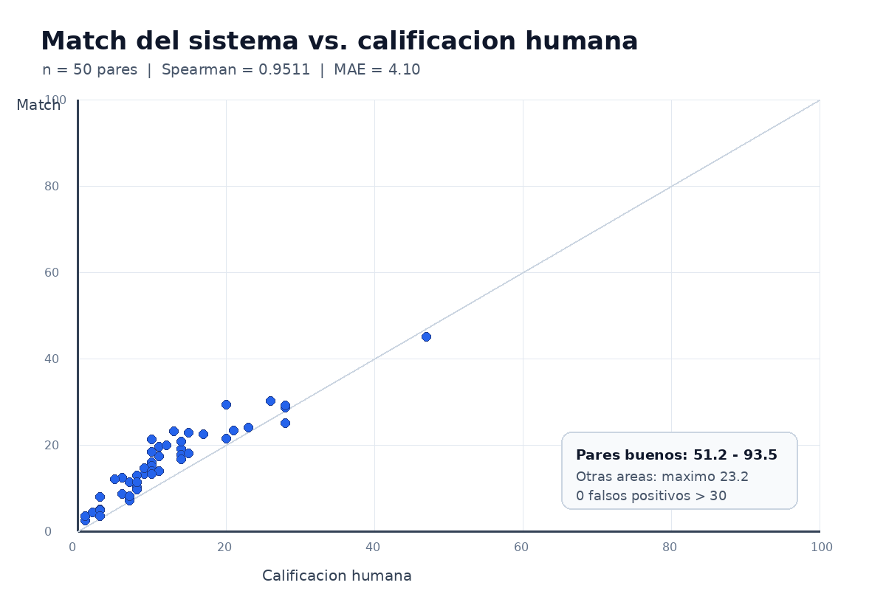

CV-Decoder
Diagnóstico de CVs y optimización ATS multilingüe para postulantes y equipos de selección.
Diagnóstico de CVs y optimización ATS multilingüe para postulantes y equipos de selección.
El MVP recibe un CV en PDF y el texto de una oferta, y devuelve un JSON con el puntaje ATS, el match con la vacante, los requisitos faltantes y la similitud. La interfaz web interactiva todavía no está implementada; esta página muestra la salida real del motor y el enlace al repositorio.

Estado actual: MVP funcional con API REST en FastAPI y Swagger. La demo interactiva y las mejoras de la interfaz quedan para la entrega del trabajo final.
CV-Decoder responde dos preguntas que suelen confundirse en los filtros ATS: si el CV está bien armado como documento y si realmente se adecúa a la oferta. El sistema extrae texto del PDF, mide parseabilidad, detecta secciones, reconoce entidades y habilidades, y compara el contenido con la vacante.
El enfoque prioriza explicabilidad: usa TF-IDF calibrado como motor principal, spaCy para entidades y reglas explícitas para requisitos, seniority y brecha de habilidades. Los embeddings multilingües se evaluaron, pero se descartaron porque ordenaban peor los pares calificados por personas.
La calibración se midió contra 50 pares CV-oferta calificados a mano. El match final ordena los pares de forma muy cercana a las notas humanas y mantiene separados los CVs de otras áreas.

Muestra: 50 pares sobre 25 CVs. Los pares buenos quedan entre 51,2 y 93,5; los CVs de otras áreas no superan 23,2 de match. Las limitaciones y el detalle técnico están en el README y en docs/informe/.